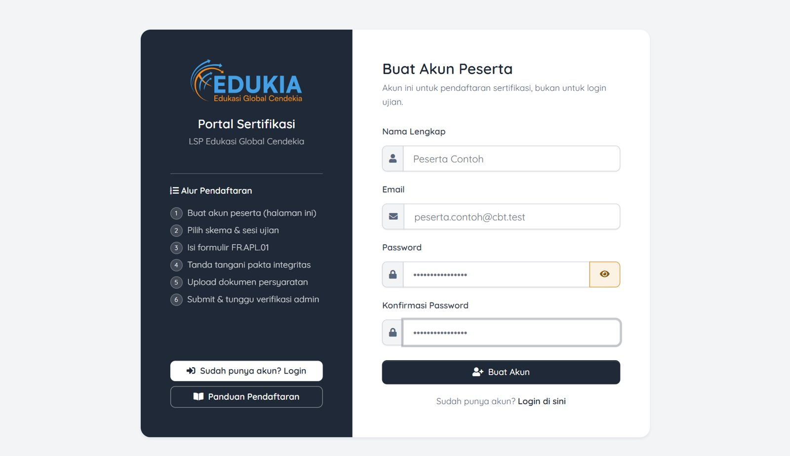
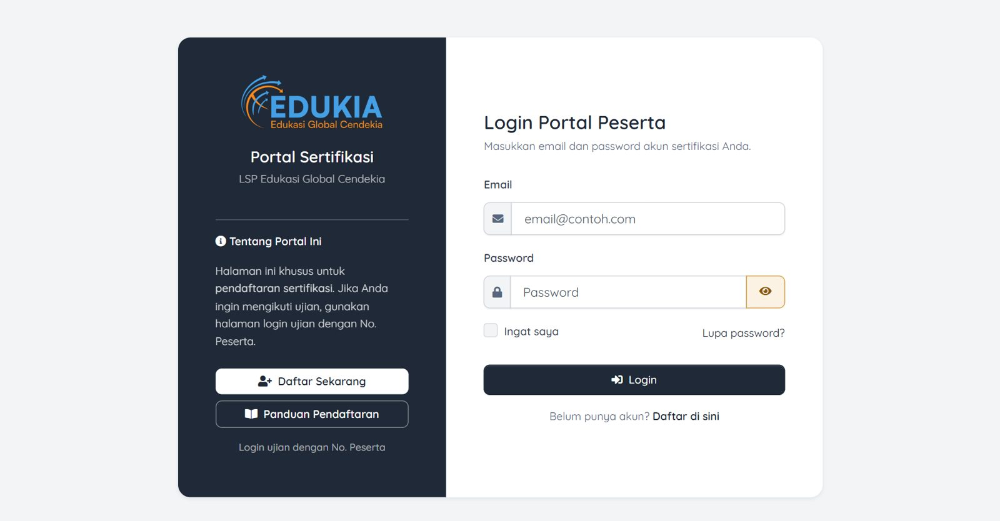
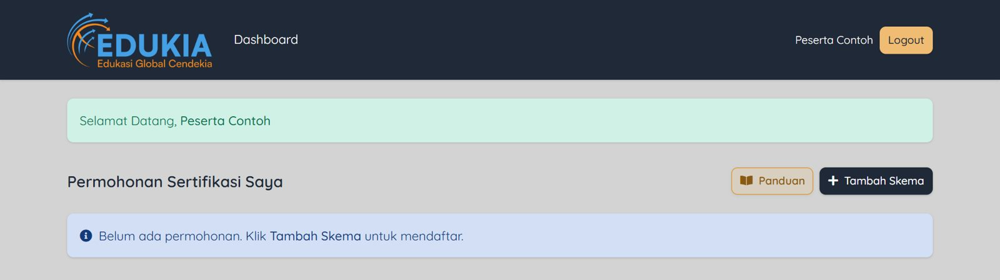
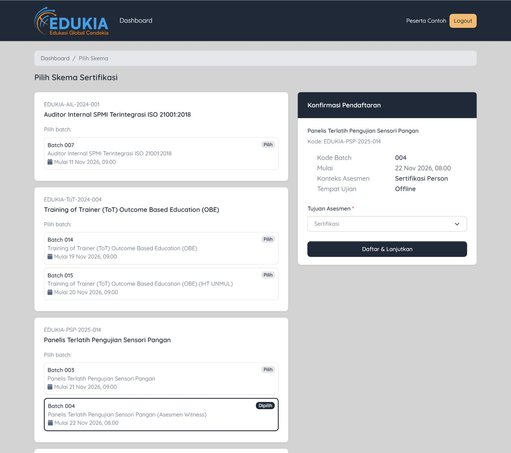
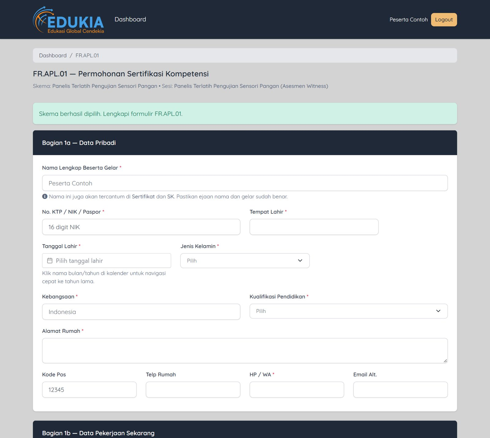
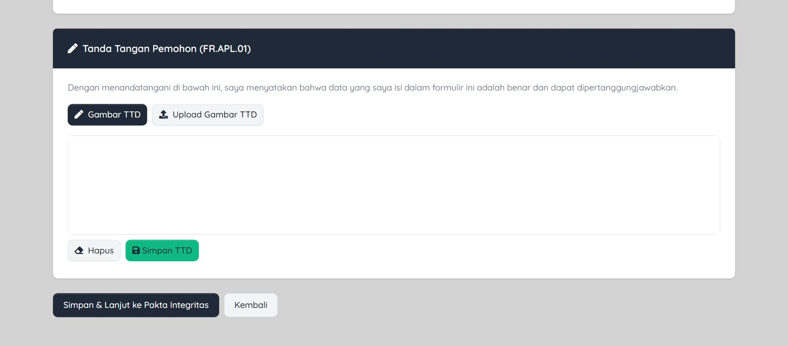
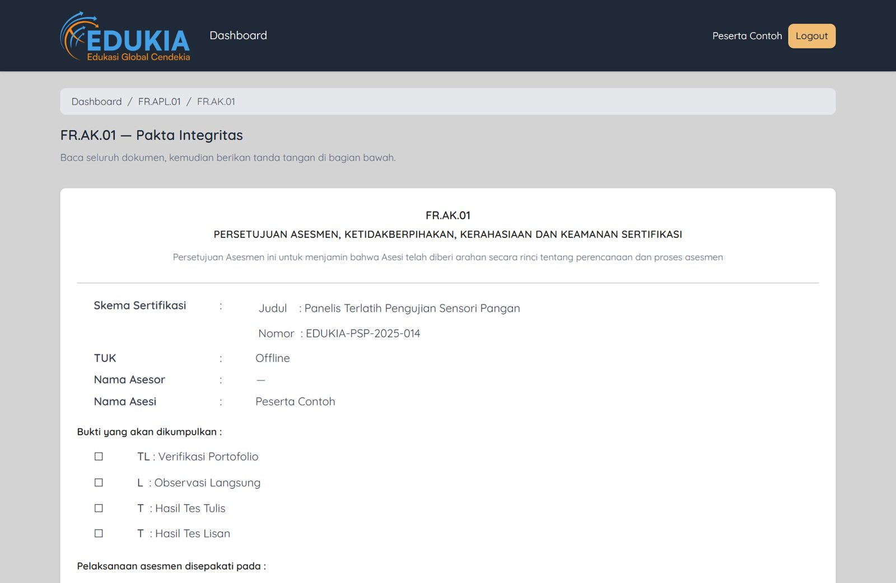
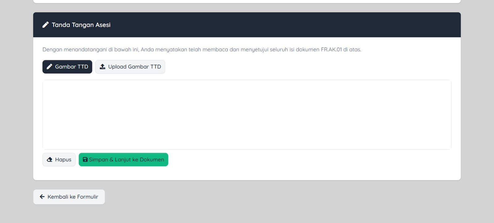
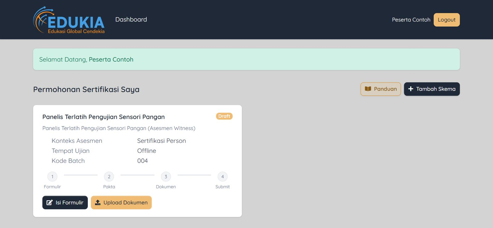

Langkah demi langkah mendaftar asesmen di Portal Peserta LSP Edukasi Global Cendekia — dari membuat
akun, mengisi formulir, sampai menerima No. Peserta Ujian, lalu mengunduh SK dan sertifikat setelah ujian.
Alamat portal: lsp-cbt.sistemedu.com/pesertaVersi: November 2026Lanjutan: Panduan Peserta — Mengerjakan Ujian
Isi panduan
Gambaran alur
Yang perlu disiapkan
Membuat akun & login
Memilih skema & batch
Mengisi formulir FR.APL.01
Menandatangani Pakta Integritas (FR.AK.01)
Mengunggah dokumen persyaratan
Submit & memantau status
Setelah disetujui: No. Peserta Ujian
Setelah ujian: hasil, FR.AK.14, SK & sertifikat
Pertanyaan umum
1Gambaran alur
Ada dua akun yang berbeda dalam proses sertifikasi:
Akun Portal Peserta (panduan ini)
Login dengan email + password di /peserta/login.
Untuk mendaftar, mengisi formulir, mengunggah dokumen, lalu melihat hasil dan mengunduh SK/sertifikat.
Login Ujian
Login hanya dengan No. Peserta di halaman depan aplikasi.
No. Peserta dikirim ke email setelah permohonan Anda disetujui admin. Cara mengerjakan ujian ada di
Panduan Peserta — Mengerjakan Ujian.
1Buat akun
2Pilih skema & batch
3Isi FR.APL.01 + TTD
4TTD Pakta FR.AK.01
5Unggah dokumen
6Submit
7Verifikasi admin
8No. Peserta via email
Permohonan berstatus Draft sampai Anda menekan Submit. Selama Draft, Anda boleh keluar dan melanjutkan
kapan saja — data, tanda tangan, dan dokumen yang sudah tersimpan tetap ada.
2Yang perlu disiapkan
Kebutuhan
Keterangan
Email aktif
Untuk membuat akun dan menerima email konfirmasi serta No. Peserta Ujian. Periksa juga folder Spam/Promosi.
Data diri
NIK/No. KTP/Paspor, tempat & tanggal lahir, jenis kelamin, alamat, No. HP/WA, kualifikasi pendidikan.
Data pekerjaan
Nama institusi/perusahaan, jabatan, alamat kantor (bila ada).
Tanda tangan
Digambar langsung di layar (mouse/jari) atau unggah foto tanda tangan JPG/PNG (maks. 2 MB).
Dokumen scan
Berkas persyaratan skema dalam PDF/JPG/PNG, maks. 5 MB per file (mis. ijazah, CV, bukti pengalaman, sertifikat pelatihan, KTP).
Perangkat
Komputer/laptop atau HP dengan koneksi internet stabil.
Nama lengkap akan tercetak di sertifikat
Tulis nama lengkap beserta gelar persis seperti yang ingin dicantumkan di SK dan sertifikat, dengan ejaan yang benar.
3Membuat akun & login
1
Buat akun peserta
Buka /peserta/register (atau tombol Daftar Sekarang di halaman login portal).
Isi Nama Lengkap, Email, Password, dan Konfirmasi Password, lalu klik
Buat Akun. Anda langsung masuk ke Dashboard.

Halaman Buat Akun Peserta
2
Login berikutnya
Masuk lewat /peserta/login dengan email dan password Anda. Centang Ingat saya bila memakai perangkat
pribadi. Lupa password? Klik Lupa password? — tautan atur ulang dikirim ke email Anda.

Halaman Login Portal Peserta
4Memilih skema & batch
Di Dashboard, klik + Tambah Skema.

Dashboard sebelum ada permohonan
Cari skema sertifikasi Anda. Setiap skema menampilkan batch (sesi) yang sedang dibuka beserta tanggal mulainya.
Klik batch yang sesuai dengan undangan/jadwal dari LSP — kotaknya bertanda Dipilih.
Periksa kartu Konfirmasi Pendaftaran di kanan: kode batch, tanggal mulai, konteks asesmen, dan tempat ujian.
Pilih Tujuan Asesmen: Sertifikasi (pertama kali) atau Sertifikasi Ulang (perpanjangan).
Klik Daftar & Lanjutkan. Permohonan Draft dibuat dan formulir FR.APL.01 terbuka.

Pilih skema, klik batch, isi Tujuan Asesmen, lalu Daftar & Lanjutkan
Pastikan batch yang dipilih benar
Satu skema bisa punya beberapa batch dengan nama mirip (mis. "Asesmen Witness"). Cocokkan kode batch dan tanggal
dengan informasi dari panitia. Batch yang sudah Anda daftar bertanda Sudah Daftar.
5Mengisi formulir FR.APL.01
Formulir terdiri atas beberapa bagian. Kolom bertanda * wajib diisi.
Bagian 1a — Data Pribadi: nama lengkap beserta gelar, No. KTP/NIK/Paspor, tempat & tanggal lahir, jenis kelamin,
kebangsaan, kualifikasi pendidikan, alamat rumah, HP/WA.
Bagian 1b — Data Pekerjaan Sekarang: institusi/perusahaan, jabatan, alamat dan kontak kantor.
Bagian 2 — Data Sertifikasi: terisi otomatis dari skema & batch yang Anda pilih.

FR.APL.01 — Data Pribadi
Tanda tangan pemohon
Di kartu Tanda Tangan Pemohon (FR.APL.01) pilih Gambar TTD lalu tanda tangani di kotak,
atau Upload Gambar TTD untuk mengunggah foto tanda tangan. Klik
Simpan TTD, kemudian Simpan & Lanjut ke Pakta Integritas.

Tanda tangan formulir, lalu Simpan & Lanjut
6Menandatangani Pakta Integritas (FR.AK.01)
Halaman ini berisi dokumen Persetujuan Asesmen, Ketidakberpihakan, Kerahasiaan dan Keamanan Sertifikasi.
Baca seluruh isinya, lalu tandatangani di kartu Tanda Tangan Asesi paling bawah dan klik
Simpan & Lanjut ke Dokumen.

Dokumen FR.AK.01 — baca sampai selesai

Tanda tangan asesi di bagian bawah halaman
Meterai elektronik FR.AK.01
Meterai elektronik (e-Meterai Peruri) dibubuhkan otomatis dan tanpa biaya setelah tanda tangan Anda, LSP, dan asesor
lengkap. Proses ini menunggu permohonan disetujui dan asesor ditugaskan, jadi tidak perlu dicek berulang kali.
7Mengunggah dokumen persyaratan
Halaman Bagian 3 — Bukti Kelengkapan Pemohon menampilkan daftar dokumen sesuai skema yang Anda pilih.
Klik Upload pada baris dokumen, pilih file (PDF/JPG/PNG, maks. 5 MB).
Status berubah dari Belum Upload menjadi menunggu pemeriksaan admin.
Ulangi untuk semua dokumen wajib (bertanda *). Dokumen tanpa tanda * boleh dilewati.
Scan/foto harus terbaca jelas, tidak terpotong, dan tidak terbalik.
Unggah dokumen sesuai barisnya (mis. ijazah di baris "Ijazah terakhir").
File lebih dari 5 MB? Kompres PDF atau perkecil resolusi foto terlebih dahulu.
8Submit & memantau status
Saat Submit, sistem memeriksa data wajib, tanda tangan formulir & pakta, dan dokumen wajib. Bila ada yang kurang,
muncul pesan yang menyebutkan kekurangannya. Bila lengkap, status berubah menjadi Disubmit dan email konfirmasi dikirim.
Dashboard menampilkan kartu permohonan dengan progres Formulir → Pakta → Dokumen → Submit. Tombol
Isi Formulir / Upload Dokumen membawa Anda kembali ke bagian yang belum selesai.

Kartu permohonan berstatus Draft di Dashboard
Status
Arti & yang perlu Anda lakukan
Draft
Belum dikirim. Lengkapi formulir, pakta, dan dokumen, lalu Submit.
Disubmit
Menunggu verifikasi admin. Dokumen yang masih menunggu atau ditolak tetap bisa diganti; dokumen yang sudah terverifikasi terkunci.
Dokumen perlu direvisi
Admin menolak dokumen tertentu beserta catatannya. Klik Lihat & Upload Ulang, ganti filenya.
Ditolak
Baca Alasan penolakan, klik Revisi & Submit Ulang. Permohonan kembali ke Draft (data lama tetap tersimpan), perbaiki, lalu Submit lagi.
Disetujui
Permohonan diterima. No. Peserta Ujian tampil di kartu dan dikirim ke email Anda.
9Setelah disetujui: No. Peserta Ujian
No. Peserta (contoh format PSP.004.2026.00001) tampil di kartu permohonan dan dikirim lewat email.
Nomor ini adalah login ujian — simpan baik-baik dan jangan dibagikan.
Pada hari ujian, buka halaman depan aplikasi, masukkan No. Peserta, lalu ikuti Panduan Peserta — Mengerjakan Ujian.
Bila skema Anda mewajibkan Upload Tugas sebelum ujian, formulir unggahnya muncul di kartu permohonan
(Baca panduan → Unduh Template → isi → Unggah Tugas, maks. 20 MB).
Ujian Praktik/Keterampilan berbatas waktu tidak diunggah di sini, melainkan dikerjakan dari portal ujian.
10Setelah ujian: hasil, FR.AK.14, SK & sertifikat
Hasil muncul di kartu permohonan setelah penilaian difinalisasi. Selama proses, kartu menampilkan
"Penilaian sedang dalam proses."
1
Lihat keputusan
Kartu Hasil Penilaian menampilkan Nilai Akhir dan keputusan KOMPETEN atau BELUM KOMPETEN.
Klik Buka FR.AK.14, baca seluruh pernyataan, gambar/unggah tanda tangan, lalu
Simpan Tanda Tangan. Meterai elektronik dibubuhkan otomatis (gratis) setelah tanda tangan tersimpan.
Bila muncul pesan pembubuhan gagal, buka halaman FR.AK.14 lagi dan klik Coba Lagi.
3
Unduh dokumen
Setelah FR.AK.14 selesai, tombol Download SK, Download Sertifikat
(bila Kompeten) dan Download SP tersedia di kartu. Periksa data pada dokumen — terutama ejaan nama —
dan segera hubungi LSP bila ada yang perlu dikoreksi. Isi juga Isi Umpan Balik Asesmen.
Belum kompeten?
Bila panitia membuka window remidi, tombol Ikut Remidi muncul di kartu. Remidi hanya
mengulang ujian tulis (Pilihan Ganda & Esai), formulir dan dokumen tidak perlu diisi ulang, dan hanya tersedia 1 kali.
11Pertanyaan umum
Apakah harus selesai sekali duduk?
Tidak. Selama berstatus Draft, Anda bisa keluar dan melanjutkan kapan saja.
Saya salah memilih batch. Bagaimana?
Hubungi panitia LSP sebelum Submit; admin dapat membantu memindahkan atau menghapus permohonan.
Email No. Peserta tidak masuk.
Periksa folder Spam/Promosi. No. Peserta juga selalu tampil di kartu permohonan di Dashboard setelah disetujui.
Bisakah mengganti dokumen setelah Submit?
Bisa untuk dokumen yang masih menunggu atau ditolak. Dokumen yang sudah terverifikasi terkunci.
Nama di SK/sertifikat salah.
Segera hubungi LSP. Nama yang tercetak diambil dari data yang Anda isi di FR.APL.01.
Butuh bantuan? Hubungi panitia LSP Edukasi Global Cendekia. Untuk cara mengikuti ujian (Pilihan Ganda,
Esai, Ujian Praktik/Keterampilan), lihat Panduan Peserta — Mengerjakan Ujian.